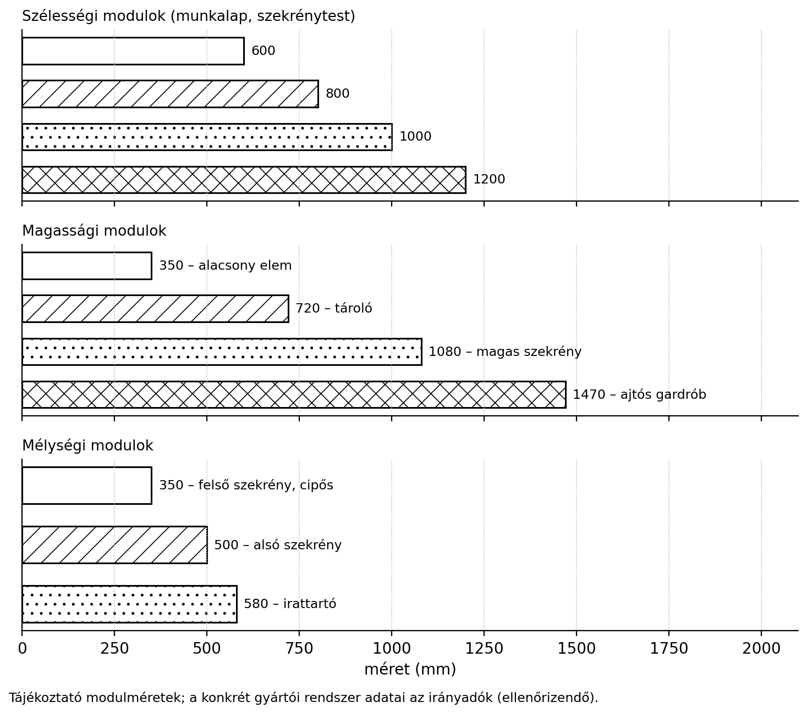

Egy iroda berendezése során az asztalos gyakran találkozik látszólag egyszerű, ám szakmailag összetett feladatokkal: a megrendelő kér egy pultot a recepcióra, íróasztalt a munkaszobába, konténert a fiókoknak, és mindezt úgy, hogy a számítógép kábelei ne legyenek láthatók. A belsőépítészeti munkáknál a bútorok gyakran a falhoz, padlóhoz vagy álmennyezethez csatlakoznak, így a gyártás mellett a szerelés pontossága is hangsúlyos. Ha a méreteket rosszul veszi fel a tanuló, a pult nem fér a helyére, ha a kábelrendezőt kihagyja az íróasztalból, a munkahely áttekinthetetlen lesz, ha pedig a moduláris rendszert nem érti, a későbbi bővítés lehetetlenné válik. Ez az alfejezet az irodai és kiegészítő bútorok, a belső téri burkolatok, valamint a kis- és nagyüzemi gyártási logika alapjait mutatja be.
Képzeljünk el egy átlagos irodai munkahelyet. Az íróasztal munkalapja 740–760 mm magasságban van, mert ülőmunkánál ez a testmagasságtól függően kényelmes csukló- és karszöget adó tartomány (ellenőrizendő: vonatkozó ergonómiai ajánlás, MSZ EN 527). A munkalap alatt egy konténer gurul, amelyben három fiók van. A fiókok előtt egy uprofil szerű kábelzsinór-csatorna fut felfelé, hogy az asztali lámpa és a monitor vezetéke ne lógjon a térd felé. A szoba hátsó falán falpanel fut, amely mögött eltűnik a hálózati és adatkábel, a panel pedig rendelkezik szerelőnyílásokkal. Ez a három termék – íróasztal, konténer, falpanel – ugyanazt az elvet követi: moduláris, bővíthető, kábelezésre tervezett, gyártás helyett összeszerelhető. Ez az elv a modern belsőépítészet alapja.
Definíció. Az irodai bútor olyan, munkahelyi környezetbe tervezett bútor, amelynél a használati méretek, a kábelvezetés, a bővíthetőség és a helytakarékos tárolás együtt jelenik meg, és a termék jellemzően lapszerkezetű, nagyüzemi gyártástechnológiával készül.
Irodai íróasztal. A leggyakoribb típusok a hagyományos asztal két oldallappal, a elemes asztal (két tárolóelem közötti munkalappal) és a magasított íróasztal (állítható, gyakran elektromos emelőoszloppal). A munkalap általában laminált forgácslap (vastagság 25–38 mm), széles élén PP vagy ABS élzáróval. A kábelvályú a munkalap alá szerelhető, ill. kábelátvezető fedél a munkalapba mart nyílásba kerül.
Definíció. A konténer az irodai tárolás guruló, fiókos eleme. Általában 420 × 580 × 600 mm (szélesség × mélység × magasság) külső méret körüli, hogy a 740 mm-es asztal munkalapja alá gördíthető legyen; ettől a gyártótól függően eltér (tájékoztató, ellenőrizendő: gyártói rendszer). A konténer a mai rendszerekben gyakran 32 mm-es rendszer szerint fúrt oldallappal készül, fiókjai alul szerelt, görgős fiókvezetővel futnak. Kiegészítője a kulcsos zár és az ütközőperem.
Definíció. Az irattároló irodai szekrény iratgyűjtő akasztóinak, dossziék vagy akták tárolására. Belső szélessége általában a függő irattartó A4-es méretéhez illeszkedik, kb. 430–450 mm; a polcok 32 mm-es lyuksorba illeszkedő polctartókkal állíthatók. A leggyakoribb típus a nyitott polcos, a félig üvegezett vagy fém-műanyag kiegészítőkkel készülő szekrény.
Tárgyalóasztal. A tárgyalóasztal lényege a nagy összefüggő felület és a stabil, keresztláb alatti szabad lábtér. Hossza általában 1800–3600 mm, szélessége 900–1200 mm, magassága 740 mm. A munkalap több, egymáshoz illesztett lapból is készülhet; ilyenkor a lapok alatt osztott vagy folytonos összekötő fut, és a csatlakozásokat toldóvasalat vagy mechanikus kötő fogja össze. A kábeltartó átmenő kábelcsatorna lehet a lábakban vagy a munkalap alatt.
Szabvány és ergonómia. Az irodai munkaasztalokra vonatkozó MSZ EN 527 a méreteket, az ergonómiai és biztonsági követelményeket, az MSZ EN 14073 ill. MSZ EN 14074 tárolóbútorokra vonatkozó biztonsági előírásokat fogalmaz meg (ellenőrizendő: pontos szabványjel és hatály). A munkalapmagasság alsó határát és az ülésmagassággal való összefüggést az ergonómiai ajánlások rögzítik; a gyakorlatban 740 mm az általános, ami 175 cm testmagasság környékén megfelelő, de székállítással illeszthető. Fontos még a térdfelület szabad magassága, legalább 650 mm, valamint a munkalap alatti szabad lábtér mélysége és a konténer visszahúzásakor fennmaradó mozgástér.
Definíció. A belsőépítészeti burkolat a lakó- vagy középület belső felületére szerelt, tűzvédelmi, akusztikai, esztétikai és gyakran gépészeti funkciót is betöltő asztalosipari termék. Ide tartoznak a faltáblák, álmennyezetek, padlóbetétek, pultok, recepciós bútorok, takaróburkolatok és dekorációs lamellák.
Falpanel. Az irodai falpanel rendszerint laminált, furnérozott vagy kárpitozott lapokból áll, amelyet tartóvázzal vagy közvetlenül a falsíkra rögzítenek. A falpanel mögött kábeltálca futhat, a panelen szerelőfedelek és szerelőnyílások helyezkednek el a dugaljakhoz, kapcsolókhoz vagy adatcsatlakozókhoz. A panelek hátulján rejtett rögzítő kampó vagy mágneses rögzítő lehet, hogy a csavarok ne legyenek láthatók.
Pultok és recepció. A pult az ügyfélfogadás, recepció, kiállítási tér vagy üzlet pultja. Jellemzői: munkaoldal (kb. 900–1100 mm magas), ügyféloldal (kb. 1100–1200 mm), 2–3 szintű kialakítás, mögötte tárolószekrény és irattartó fiókok, elöl tömör elülső fal, gyakran megvilágított cégfelirat vagy LED szegély. A pultok moduláris elemekből épülnek: alsó szekrénymodul + felső munkapult + homloklemez + oldallezáró. Az előlap döntött lehet, a belső élének lekerekítése fontos a kényelem és a biztonság miatt.
Belsőépítészeti burkolatok gyártása. A falpanelt és pultot gyakran lapszerkezetből készítik: laminált MDF vagy forgácslap, élzáró, hátfal, hátlap-hornyok, csatlakozó elemek. A helyszínen pontosan vázolt és méretre vágott szerkezetet szerelnek fel; a gyártásnál előszerelést alkalmaznak, de a végleges méretet a helyszínre szállítás előtt próbaszereléssel ellenőrzik. Tűzvédelmi szempontból a belsőépítészeti burkolatok anyagválasztása különösen fontos: középületekben gyakran tűzvédő (B-s1, d0) minősítésű lapra van szükség (ellenőrizendő: OTSZ, tűzvédelmi osztályba sorolás).
Polc. A polc a legáltalánosabb kiegészítő bútor: vízszintes teherhordó lapból és konzolból, polctartóból, illetve oldallapokból áll. A polc maximális fesztávolságát a terhelés és a lap vastagsága határozza meg; tájékoztató adat: 28 mm vastag laminált lapnál 800 mm támaszköz, 25 kg/m² hasznos terhelés elfogadható, de a konkrét értéket a gyártói adatlap adja (ellenőrizendő: terhelési táblázat). A polcok az irodai bútorrendszerekben a 32 mm-es lyuksorba helyezhetők, így átszerelhetők.
Tükör. A tükör kiegészítő asztalos termék, melynél a keret fából készül, a tükörlap védőréteggel van hátul. A falra szerelt tükör keretét úgy kell méretezni, hogy a tükör széle nehogy megszoruljon; a tükör súlyát a keret és a falra rögzített D-gyűrűk, fogasok vagy biztonsági kampó viselje. Fontos a keret hátoldalán gőzzáró fólia, mert a fal nedvessége a tükör hátoldali ezüstrétegét (foncsorát) károsítja. A tükröt sosem ragasztjuk közvetlenül nedves falfelületre, hanem rugalmas tömítővel vagy párnával fogatjuk be.
Előszobafal. Az előszobafal a lakás bejáratánál elhelyezett, cipőtárolóval, ruhatartóval, tükörrel és ülőkével kombinált bútor. A leggyakoribb típusok: belépő oldalában, ha van cipősszekrénye, kampós falpanel és ülőke. Az előszobafal moduláris felépítésű: alsó cipős szekrény + felső kabáttartó panel + ülőke. A cipős szekrény belső polcai döntöttek vagy kihúzhatók; a cipőtároló ajtaján szellőző rács vagy rés jelentkezik a pára elvezetésére. A szekrény mélysége általában 350–400 mm, magassága 1000–1100 mm lehet, de az ergonómia és a hely függvénye.
Cipősszekrény. A cipősszekrény keskeny, 350–400 mm mély szekrény, amelyben a cipők félpárban, hosszirányba fordítva tárolhatók. A polcok döntöttek 45–60°-ban, így a cipő nem csúszik előre. Az ajtó lehet buktató, hogy a belső tér jobban hozzáférhető legyen, vagy kihúzható fiókos, ahol a fiókokban mozgatható rekeszek vannak. A szekrény alján csepptálca vagy védőfelület gyűjti a nedvességet, a hátfalat gőzelvezető réssel vagy szellőző lyukkal kell ellátni, hogy a penész elkerülhető legyen.
Kisüzemi gyártás. A kis üzemben az irodai és kiegészítő bútorokat jellemzően egyedi méretre, változtatható szerkezettel, kis sorozatban gyártják. Az asztalos a rajz alapján lapot szabat, élzárót ragaszt, majd kézi gépekkel függetlenítve furatol, vezetősínt szerel, vasalatoz és szerel. A pontosság itt is kulcs, de a segédlet- és sablonhasználat (furósablon, ütköző, élzáró sablon) fontos időmegtakarítás. A kisüzem rugalmas, de munkaigényes.
Nagyüzemi gyártás. Az irodai bútoroknál a nagyüzemi gyártás jellemzően modulrendszerre épül: a lapok szabványos rácsba illeszkednek, a furatok 32 mm-es lyukrendszer szerint készülnek, az alkatrészek CNC megmunkálóközponton egyszerre szabják, marják, élzárják és fúrják. Jellemző a szalagcsiszolás, a folyamatos élzáró, az automata zsugorfóliás csomagolás. A bútorokat lapra szerelve szállítják, a vevő vagy a helyszíni szerelő kampós csavaros vagy gyorskioldó kötésekkel állítja össze. A nagyüzemi gyártásnál a tűrés jellemzően ±0,2–0,5 mm az alkatrészeken, a furatok pozíciója ±0,3 mm-nél jobb (ellenőrizendő: a gép és a gyártói előírás szerint).
Definíció. A moduláris rendszer olyan bútor- és burkolatcsalád, amely azonos alapmodul-méretekre, azonos szerkezeti csatlakozásokra és szabványos furatkiosztásra épül. Az elemeket kombinálva különféle termékek – íróasztal, konténer, tároló, pult, falpanel – állíthatók össze, és később is bővíthetők.
A modulos rendszer alapelvei:
A moduláris rendszer előnye: időálló, csereszabatos alkatrészek, kevesebb raktározott tétel, gyors tervezés, bővíthetőség. Hátránya: a szabadságot a modulméretek korlátozzák, ezért egyedi belsőépítészeti feladatnál gyakran vegyes megoldást alkalmazunk: a standard testmodulokhoz egyedi, helyszíni kiegészítő elemeket gyártunk.
A bal oldali függőleges metszet egy 1600 × 800 × 28 mm-es munkalapú, 740 mm magas íróasztalt mutat: a munkalap alatt hátul kábelvályú, a munkalapban kábelátvezető van, a térdtér szabad magassága legalább 650 mm, mellette a konténer áll. A jobb oldali vízszintes metszeten a falra 50 mm-es fém tartóváz kerül, benne kábeltálca fut, elöl 18 mm-es panelek ülnek rejtett kampós rögzítéssel, a kábeltálcához levehető szerelőfedél ad hozzáférést.
Példa. Egy irodaprojektben a megrendelő két darab íróasztalt kér a tárgyaló egyik falára, és egy falpanelt a mögötte lévő gépészet eltakarására. A rendelkezésre álló falfülke hossza 4800 mm, a panel vastagságát itt nem vesszük figyelembe. Az íróasztalok moduláris rendszerből készülnek; a munkalap hosszát a modulok 800, 1200, 1600 mm-es szélességben teszik lehetővé. A rendelkezésre álló szabad falméret egy-egy íróasztalnál (a 420 mm-es konténerrel együtt) legfeljebb 1600 mm munkalapmodul fér el. A falpanel mögötti gépészet miatt 6 db 800 mm hosszú panelmodul kell, azok 4 mm-es illesztési hézaggal csatlakoznak. Számítsd ki, mennyi kábelvályú-hossz szükséges összesen, ha a kábelvályú egy íróasztal alatt a munkalap mindkét végétől 30 mm-re végződik.
Számítás.
Eredmény: kábelvályú hossz 3 080 mm; panel hossza 4 820 mm a hézagokkal, ami 20 mm-rel több a fülkénél. A gyakorlatban az utolsó modult 20 mm-rel szűkítik, vagy bütü-ütközést használnak hézag nélkül. ∎
Az ábra a modulrendszer három raszterét külön sávban mutatja, így egy sávon belül mindig ugyanazt a mennyiséget hasonlítjuk össze: szélességi modulok (600, 800, 1000, 1200 mm), magassági modulok (350, 720, 1080, 1470 mm) és mélységi modulok (350, 500, 580 mm).

Szabvány. Az irodai bútorokra vonatkozó működési és biztonsági követelményeket elsősorban az MSZ EN 527 (irodai munkaasztalok) és az MSZ EN 14073/14074 (irodai tárolóbútorok) szabályozza (ellenőrizendő: a hatályos szabványjel, a pontos tárgykör). A belsőépítészeti burkolatok tűzvédelmi követelményeit a hatályos Országos Tűzvédelmi Szabályzat (OTSZ) és az építési termékek forgalmazásáról szóló rendelet szerint kell értelmezni (ellenőrizendő). A falburkolatok tűzvédelmi és akusztikai követelményeit az OTSZ és a termék teljesítménynyilatkozata adja (ellenőrizendő). A világítás és a kábelvezetés villamos követelményei az MSZ HD 60364 kisfeszültségű villamos berendezések szabályaira és a munkavédelmi előírásokra vonatkoznak (ellenőrizendő). A bútorok emissziós (formaldehid) követelményei a lapanyagoknál korábban tárgyalt osztályozás szerint érvényesek; irodai bútoroknál gyakran E1 vagy jobb osztály ajánlott (ellenőrizendő).
Technológiai lap. Cél: háromfiókos, görgős irodai konténer készítése moduláris rendszerben. Anyagok: laminált forgácslap 18 mm (oldal, fedlap), 10 mm hátfal (HDF vagy laminált farostlemez), 18 mm fiókelőlap, acél fiókvezető, görgő, csavar, kötőelem. Gépek és szerszámok: lapszabászgép, éllezáró, CNC vagy oszlopos fúrógép, akkumulátoros csavarozó, ütközők, derékszögelő, mérőszalag.
Gépbiztonság. A művelet betanított, felügyelt tanulónak szól; védőberendezés nélkül, egyedül, fáradtan ne végezd. A lapszabászon mindig védőburkolat, fűrészlap és hasítóék legyen a helyén; por- és forgácsszívás bekapcsolva; a munkadarabot tolófával told. A CNC gép kezelését a gépkönyv szerint, oktató felügyeletével végezd. Viselj védőszemüveget, munkavédelmi cipőt; kesztyűt a forgó szerszám közelében nem, de csomagoláskor viselj.
Indítás előtti ellenőrzés: furnér és lapok hibamentesek; szerszámok rögzítése megfelelő; élzáró gép hőmérséklete a gyártói értéken; a fúrók élesek; a munkaterület szabad; a vészleállító elérhető.
Számozott lépések:
Az irodai bútor legfontosabb ellenőrzési pontjai:
Eltérésnél a hibás alkatrészt ne erőltessük; a javítás módja az élzáró újraragasztása, a furat áthelyezése vagy a gyártásközi beállítás.
Valós eset. Egy recepciós pultot és íróasztalokat gyártó műhelyben az elkészült pult hátsó, ügyfél felőli oldala 1180 mm magas lett, de a megrendelő szerint az ügyfél oldalán álló, átlagos testmagasságú ember nem érte el kényelmesen az aláírandó dokumentumot. Utólag kiderült, hogy a pult alapszekrénye 920 mm magasra készült, a felső munkapult 40 mm vastag, és a homloklemez 220 mm-t hozzáépített. Az ügyféloldali magasság így 1180 mm lett, ami 80 mm-rel magasabb a kényelmes 1100 mm-nél. A hiba oka: a tervező a pult szerkezeti rajzán nem jelölte az ügyféloldali magasságot, és a gyártósablon alapján készült homloklemezt minden modulon alkalmazta. A javítás az volt, hogy a homloklemezt 80 mm-rel alacsonyabbra szabták, és a belső szerelőelemet áthelyezték; így a pult végül megfelelt. Tanulság: a belsőépítészeti terméknél a használati magasságot mindig a rajzon fel kell tüntetni, és a próbaszerelésnél a vevői oldalról is meg kell nézni a terméket.
Önellenőrzés – válaszok a
### Megoldások elején.
Fogalmazd meg, mit jelent a “moduláris rendszer” az irodai bútoroknál, és sorolj fel legalább három előnyét!
Egy íróasztal munkalapja 1600 mm hosszú és 800 mm széles, vastagsága 28 mm. A kábelvályú mindkét végén 25 mm-es szabad hézagot kell hagyni. Mekkora a kábelvályú hossza?
Egy falpanel mögé 6 db 800 mm széles panelt terveznek, 4 mm-es illesztési hézagokkal. A rendelkezésre álló falfülke 5100 mm. Hány panelmodul fér el, ha az egyes hézag sem hagyható el, és a szélső illesztésekhez plusz 8 mm takarólemezt adnak? Kell-e vágni, és ha igen, mennyit?
Egy irodai konténer oldallapja 580 mm mély és 600 mm magas, a fúrások a 32 mm-es rendszer szerint készülnek. A furatsor az oldallap elülső élétől 37 mm-re fut; az első furat az alsó éltől 64 mm-re van, a többi 32 mm-enként. Hányadik furat esik az alsó éltől 288 mm-re? Rajzold le a furatkiosztást vázlatosan, és jelöld a távolságokat.
Egy irodabútor-megrendelésben a pult ügyféloldali magassága 1120 mm, a belső munkalap teteje 760 mm magasan van. A homloklemez alsó éle 10 mm-rel a padló fölött van, teteje a pult fedőlapjának aljához zár. Milyen magas a homloklemez, ha a fedőlap vastagsága 40 mm? Milyen szerkezeti megfontolást érdemes figyelembe venni a kábelezésnél?
Készíts technológiai tervet egy előszobafal cipős szekrényéhez. A szekrény befoglaló mérete (az ajtóval és a hátfallal együtt): szélesség 800 mm, magasság 1100 mm, mélység 360 mm. A polcok döntöttek, a hátfal 6 mm vastag. Írd le a szabásjegyzék fő sorait (anyag, kész méret, darabszám) és a gyártási sorrendet. A válaszban tüntesd fel, milyen gépekkel dolgoznál, és milyen ellenőrzést végeznél az élzárás után!
A moduláris rendszer olyan bútorcsalád, amely azonos alapméretekre, furatkiosztásra és csatlakozó vasalatokra épül, így az elemek kombinálhatók és bővíthetők. Előnyök: gyors tervezés, csereszabatos alkatrészek, kevesebb raktározott tétel, egyszerűbb szerelés.
A kábelvályú hossza = munkalaphossz – 2 × szabad hézag = 1600 mm – 2 × 25 mm = 1550 mm. A vályú tehát 1 550 mm hosszú.
A fülke hossza: 5100 mm. A 6 db panel hossza 6 × 800 = 4800 mm. Az illesztési hézagok: 5 × 4 = 20 mm. A szélső takarólemez 2 × 8 = 16 mm. Összes hossz: 4800 + 20 + 16 = 4836 mm. A fülke 5100 mm, tehát marad 264 mm. Ezért nem kell vágni; a maradék területet takaróléccel vagy tömítéssel kell lezárni. Ha nem kívánunk hézagot, akkor a modulok mellé egy 264 mm-es passzpanelt is tervezhetünk.
A furatsor az elülső éltől 37 mm-re fut (ez a vízszintes távolság). Az első furat az alsó éltől 64 mm-re van, a többi 32 mm-enként: 64, 96, 128, …, . A keresett sorszám: . Vázlat: egy függőleges vonal mentén pontok az alsó éltől 64, 96, 128, 160, 192, 224, 256, 288 mm-re; a furatsor az elülső éltől 37 mm-re fut. A 32 mm-es rendszer raszterje fix.
A homloklemez teteje a fedőlap aljához illeszkedik. A fedőlap teteje 1120 mm, alja 1120 − 40 = 1080 mm. A homloklemez alsó éle 10 mm-rel a padló fölött van, ezért a homloklemez magassága 1080 − 10 = 1070 mm. Ellenőrzés: 10 + 1070 + 40 = 1120 mm. A belső munkalap (760 mm) a homloklemez magasságát nem befolyásolja, csak a kábelek átvezetésénél számít. Szerkezeti megfontolás: a homloklemez mögött a kábelvályú és a szerelőnyílások úgy fussanak, hogy a takarólemez ne nyomja a vezetéket; a vezetékeket a szekrényen belül rögzíteni kell.
Anyag és szabásjegyzék fő sorai (kész méret h × sz × v mm, anyag: laminált forgácslap 18 mm, hátfal 6 mm HDF, hátulra rálapolva): a befoglaló mélység 360 mm = 336 (test) + 6 (hátfal) + 18 (ajtó); a szélesség 800 mm = 18 + 764 + 18.
Gyártási sorrend: szabás – élzárás – fúrás (sorozatfúró vagy CNC) – döntött polctartó furatok – szerelés csavarokkal – hátfal felcsavarozása (rálapolva) – ajtó beállítása. Az élzárás után ellenőrizni kell, hogy az élzáró mindenütt tapad, nincs ragasztógyöngy, az élek letisztítottak, és a polctartó furatok a 32 mm-es rendszerben egyforma magasságban vannak.
Az irodai és belsőépítészeti bútoroknál a moduláris rendszer az alap: szabványos méretek, 32 mm-es furatkiosztás, csereszabatos vasalatok. Az íróasztal, konténer, irattartó és tárgyalóasztal ergonómiai méretei szabványokból származnak, és a kábelrendezés mindegyiknél fontos. A belső téri burkolatok – pult, recepció, falpanel – nemcsak dekoráció, hanem gépészeti és tűzvédelmi szerepűek is; a falpanelek mögött kábelterek futnak, a szerelőnyílások hozzáférést biztosítanak. A kiegészítő bútorok (polc, tükör, előszobafal, cipősszekrény) jellemzően lap- és keretszerkezetből készülnek, és a nedvesség elleni védelemre itt is figyelni kell. A kisüzemi gyártás egyedi, sablonos, a nagyüzemi moduláris, CNC-vezérelt, élzáróval és vasalatokkal integrált. A továbbvitt eredmény: az irodai és belsőépítészeti termékeket a későbbi helyszíni szerelésnél, a gyártástervezésnél és a vizsgaremeknél ugyanazzal a moduláris logikával kell kezelni, mint itt; a méreteket, kábelteret, tűzvédelmi és ergonómiai szempontokat a rajzon és a technológiai lapon is rögzíteni kell.
Felhasznált forrástípusok: szabványok (MSZ EN 527, MSZ EN 14073/14074, OTSZ, MSZ HD 60364 – a pontos hatályos jelzet ellenőrizendő), gyártói műszaki adatlapok (lapanyagok, vasalatok, kábelvályú, emelőoszlop), ergonómiai szakkönyvek, belsőépítészeti tervezési útmutatók. Ellenőrizendő pontok: a szabványszámok hatályos verziója, a munkalapmagasság és lábtér pontos ergonómiai adatai, a terhelési táblázatok, a tűzvédelmi osztályba sorolás, a 32 mm-es rendszer gyártói specifikációja, a nagyüzemi tűrésértékek. A számítások mintaadatokkal készültek; éles gyártásnál a gyártói és szabványadatok a mérvadók.